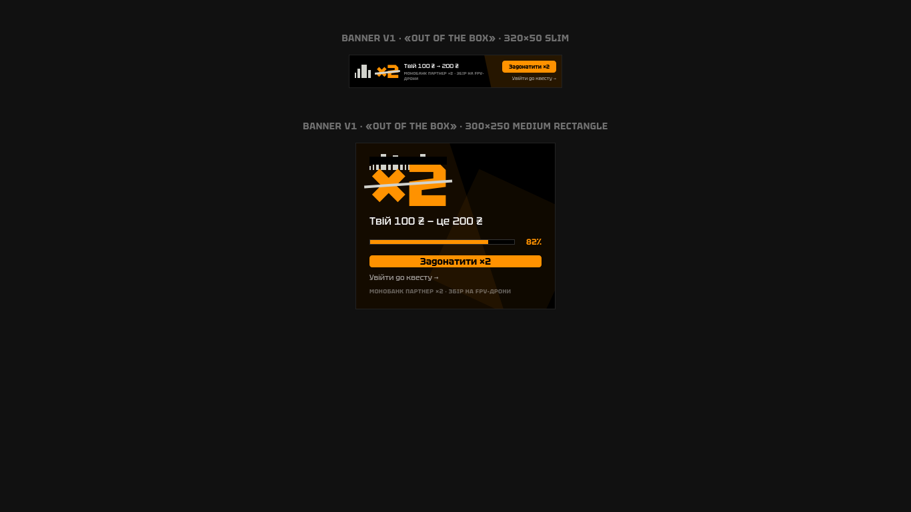
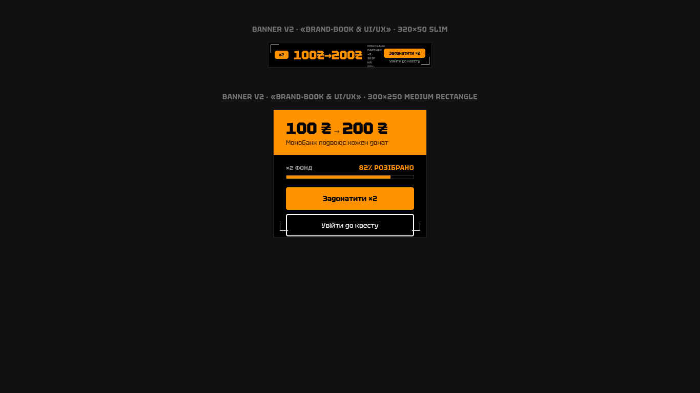
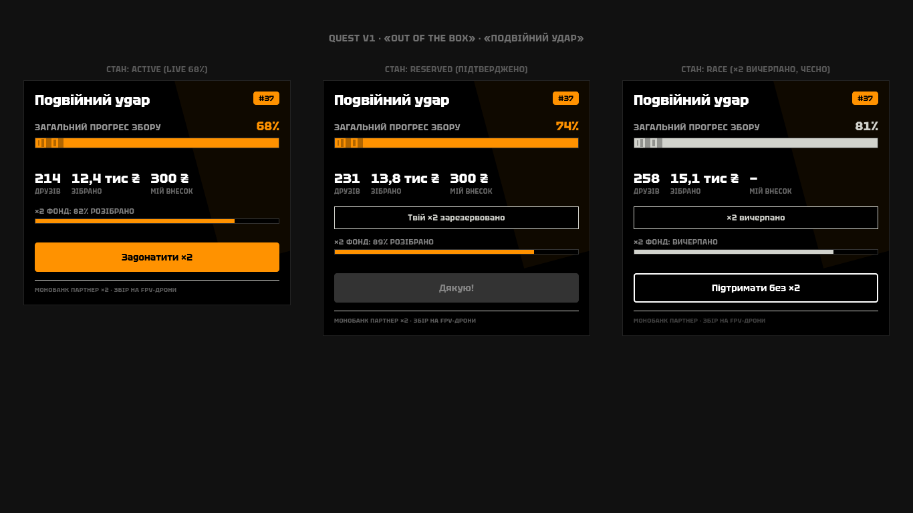
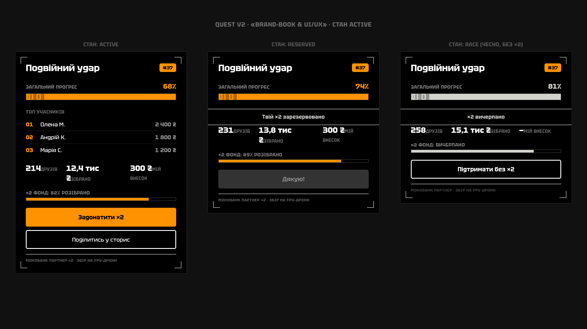
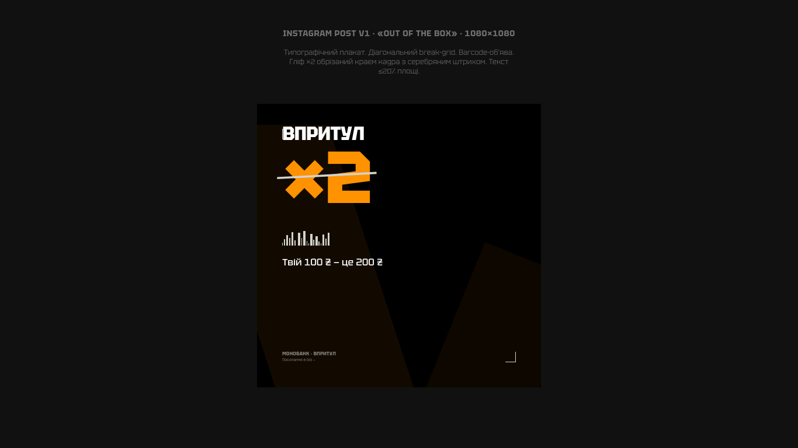
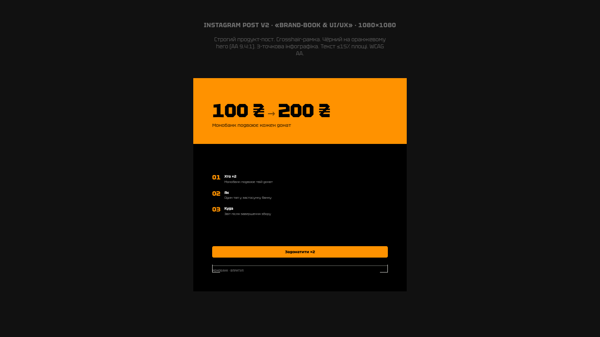

Case Study 01
Donation platform for Monobank × Впритул. A complete design pipeline — from competitive landscape to a pixel-perfect design system — built through 12 rigorous stages.
Open in Figma →Ukrainian charitable giving needed a platform that matched the speed and trust of mobile banking. Monobank — Ukraine's most popular neobank — partnered with Впритул, one of the country's largest charity platforms, to create a seamless donation experience. The challenge: design a system where every donation triggers a matching double contribution, creating a "Double Trail" effect that amplifies generosity.
The platform had to work within Monobank's existing ecosystem while maintaining the emotional weight of charitable giving — not just another payment flow, but a moment of genuine human connection.
This project ran through a complete 12-stage design pipeline, each stage building on the previous with documented decisions and critique gates:
The "Double Trail" is the emotional and functional core of the platform. Every donation creates a visible ripple — the giver's contribution is matched, doubling the impact. This isn't just a feature; it's a design philosophy that shapes every screen.
The visual language reinforces this: paired elements, mirrored layouts, and a sense of growth that's both personal and collective. When you give, you see your impact multiply in real time.
The project received a GO verdict after rigorous critique. The design system was built to scale — reusable tokens, documented component states, and accessibility baked in from stage one. The pipeline itself became a reference for how AI-directed design can produce shipping-grade work.
3 formats, 2 variants each (V1 creative / V2 strict brandbook+WCAG). All renders are 1366×768 HTML/CSS prototypes — self-contained, pixel-perfect, production-ready.

Banner V1 — Creative / out-of-box layout. Orange #FF9200 dominant, barcode stroke motif.

Banner V2 — Strict brandbook, WCAG-compliant orange pairing (black-on-orange / orange-on-black).

Quest V1 — "Подвійний удар" (Double Strike) with live progress bar and dual CTA.

Quest V2 — Brandbook-compliant variant, sight/crosshair motif in header.

IG Post V1 — Creative social format with ×2 matching callout.

IG Post V2 — Brandbook variant with Tektur typography and silver decorative accents.